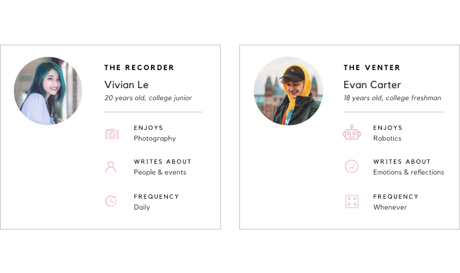
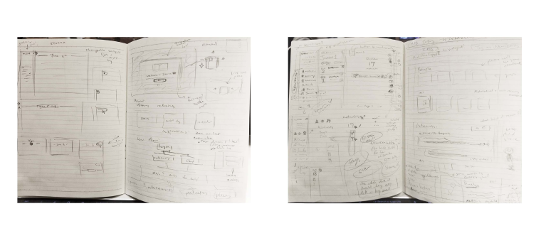
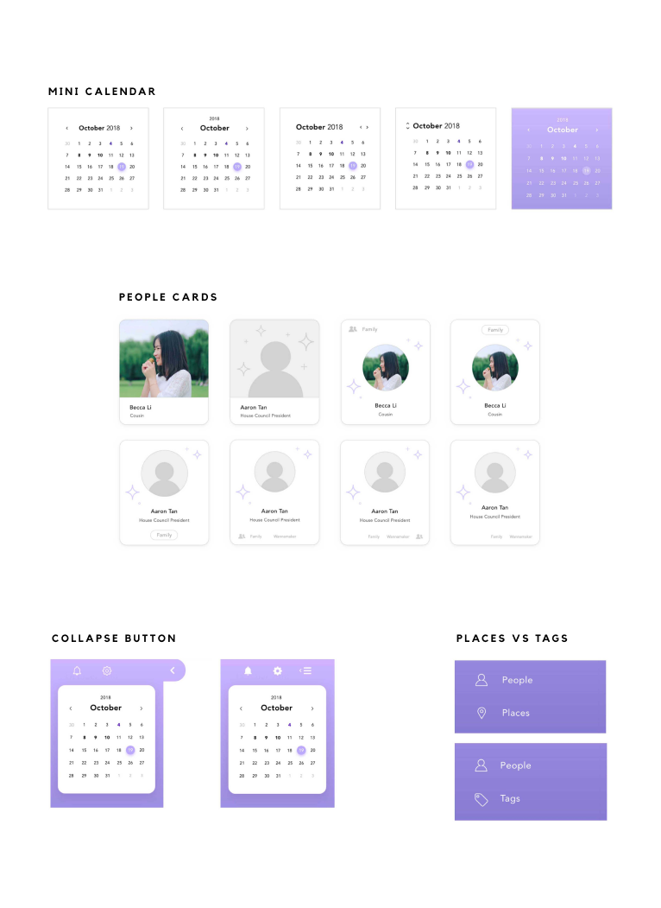

👀 OVERVIEW
Storia is a personal concept I designed
to be a desktop app that helps busy people
chronicle their lives as a story.
This was a project I worked on whenever I had time during my junior year fall semester. Even though it was only a short
time, it’s a concept that’s close to home for me, combining my love of journaling & writing with design, and it was my
first experience designing an app from 0→1 all on my own!
💡 INSPIRATION
The idea for Storia came from my own story:
going from journaling every single day to
losing touch with it completely.
I used to journal daily! I signed up for a journal service that would email me a reminder every day, and in the evenings
I'd take the time to just reflect and write. I really enjoyed having those times of peace and clarity of mind. If I
skipped a day, I’d fill it back in within a couple days.
When I hit college, I was so busy that the reminders just started piling up. Every few months, I'd try to write a
"catch-up" entry about everything that happened to me so far—events, new people I'd met—but it would be so long and
disorganized that I'd end up giving up.
🤔 PROBLEM
Journaling is hard to keep up with,
& it’s challenging to organize everything that’s been happening in your life into writing.
With the hustle and bustle of our everyday lives, it’s so hard to find time to write and reflect on what’s been going
on. And the longer you go without writing, the more memories you have to catch up on writing! With how multi-faceted our
lives are, we’re just left with a chaotic mess of people, events, and feelings to put in our journals.
🔍 RESEARCH
Was this just a me problem?
I needed to do my research: talking to others &
seeing the journaling landscape.
To really understand the problem at hand and how to design the best solution, I sent out a preliminary user
questionnaire and looked at existing solutions.
QUESTIONNAIRE
In the questionnaire, I asked college students about their journaling habits. I discovered some key statistics,
barriers, and habits:
BENCHMARKING
I then looked at existing solutions, their pros and cons, and how they could be applied to Storia. I looked at four
different categories of solutions: bona fide journaling apps, writing apps, habit-forming apps, and story
planning/organizing apps. I wanted to learn more about how they solved their users' problems.
Afterwards, I came up with lists of features that I thought were most successful and effective for each category of
apps.
ADDRESSING USER CONCERNS
I used my benchmarking takeaways to map users' concerns from the questionnaire to features Storia could have as
solutions. While the last one, "journaling is difficult to organize," wasn't a user concern, it was one of the core
problems I was trying to address in the first place.
😊😄 USERS
Meet college students Vivian & Evan:
the 2 user personas made from my research.
The two have distinct use cases and habits:

Vivian loves photography because it allows her to record the important events and people in her life. She uses
journaling as another way to record everything, so she wants to write daily and add photos she's taken.
On the other hand, as a freshman, Evan is stressed out from the new college environment. His advisor suggested he use a
journal to vent his feelings whenever he's overwhelmed, but he has trouble putting his feelings to words.
USER JOURNEYS
I then outlined user journeys that captured how Vivian and Evan would interact with Storia in their day to day lives.
These would help me visualize the user flow and what features each screen should include.
Given the little time I had to work on Storia, I focused on Vivian’s journey first, translating it to a more generalized
user flow.
💭 IDEATION
To kickstart the design work,
I started with some rough sketches, a mood board, & a basic style guide.
SKETCHING
I played with different layouts quickly by sketching out my ideas and scribbling notes. At this point, I focused on just
getting any idea I had out on paper, which is why they're so messy! Here are a few pages out of many:

MOOD BOARD
I made a mood board for style inspiration, centered around purple (which is a relaxing color, according to color theory)
and twilight/night.
STYLE GUIDE
Based on the mood board, I came up with a rough preliminary style guide to use as a starting point for my designs.
✏️ ITERATIONS
Throughout the design process,
I continued testing design variants with target users to help refine the UX & the visual
direction.
I asked some of the users who had filled out the preliminary questionnaire for their opinions on my work in progress and
conducted some A/B testing.
MINIMALISM VS. COMFORT
Early on, I played with a very minimalist design in the spirit of Medium and other distraction-free environments, with a
mostly white background and line icons, thinking it would be the best solution for users' concerns about being easily
distracted.
After showing it to users, however, I found that while it wasn't distracting, some users said it also made journaling
feel less intimate. The white interface was too sterile and empty, and in an ideal world an online diary should feel
comforting and friendly—a safe space to express yourself.
I added more colors, making the purple accent more prominent, and added more rounded edges. I also made the bookmark
button bigger and at the top of the entry, much like where a bookmark would go in a real book.

With these additions, the main screen wasn't very distraction-free environment, so I also added buttons to collapse the
side bar and a full screen the writing area!
OTHER ITERATIONS
My other iterations were largely minute visual design changes (like the mini calendar, people cards, and collapse
buttons) and one decision between including different features (places vs tags). Every time I completed a line of
iterations for a feature, I would check in with users. Occasionally, I also asked them to complete tasks on the work in
progress prototype.

For places vs tags, I originally considered having a "Places" feature to accompany the "People" page, where users could
see diary entries organized by places they were written in. When I asked users, though, they said they would generally
write their entries in the same place most days. I changed this feature to "Tags" as an alternative organizational
system and received much more positive response.
🖥️ PROTOTYPE & FINAL DESIGNS
Take a look at the prototype,
featuring the final designs I made:
(ft. static mocks below the prototype gif)
Prototype
(click for high-res)

Email
The email makes it quick & easy for users to get their entries in. Users can reply to the email with their entries
directly, and the prompt is there to help if they need it. The email also tells users if they're close to completing an
achievement to incentivize them!

Main Screen
The main screen features three panels: navigation, entries, and writing space.
The collapsible RHC and full screen button keep the writing space distraction-free. Clicking on dates in the mini
calendar shows all entries made on that day throughout the years.
If the user is coming from an email, the writing space shows the same prompt. Users can close the prompt, keep it
(turning it into plain, editable text), or get a new prompt.

Achievements
The achievements are meant to users to meet their goals and make new habits. Since every user will have
their own individual goals, users can make their own achievements outside of the premade ones.
The completed section is like a trophy case, with a prominent image selected in achievement creation from a variety of
premade medal images in bronze, silver, gold, etc., or users can upload their own.


People
When users tag names in their entries, a profile is automatically created in the People tab (but users can manually
create one too). Here, users can add any info they want to remember: how they know each other, how they met, nicknames,
birthdays, a brief description, photos, etc.
Once the profile is created, Storia automatically tracks mentions of the name and associated nicknames. Users can also
add people to groups like family, organizations, and more.
👋️ NEXT STEPS
While it was a short first project,
I’d love to return to it some day!
I’d love to add more features, like onboarding, dark mode, calendar sync, sharing options, other ways for users to
freely express themselves (maybe drawing and voice recordings!), and some sort of rewards system, with further usability
testing too!